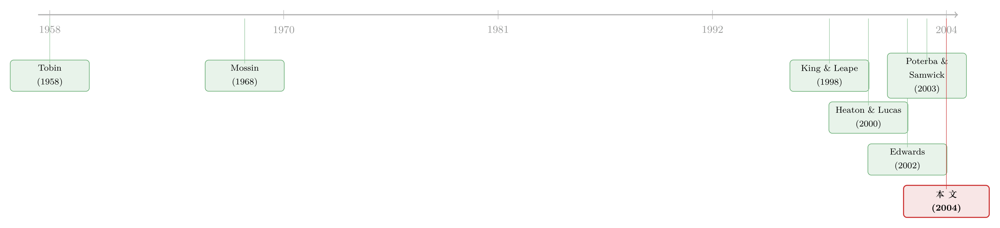

病了之后，钱该怎么放？——健康，是组合选择里被漏掉的那个变量
本文读的是 Rosen & Wu (2004, Journal of Financial Economics)：用美国「健康与退休研究」(Health and Retirement Study, HRS) 的四期面板，他们发现健康状况是家庭组合选择 (portfolio choice) 的一个独立且显著的预测变量——在总财富等其他条件都相同的前提下，身体不好的家庭更不愿意持有风险资产，更愿意把钱压在安全资产上。而且这层关系，不是通过风险偏好、规划期限、或医保身份这些「中间变量」起作用的。
1 一个被漏掉的变量
经济学家研究家庭的组合选择，已经研究了半个多世纪。我们大概知道，一个家庭手里有多少风险资产、买不买股票，取决于它有多少钱（总财富）、有多少收入，取决于年龄、种族、性别、婚姻状况这些人口学特征。这些变量被反复地放进回归里，也确实一次次显著。
但有一个变量，长期地被放在角落里——健康。
这听上去几乎不可思议。一个人病了，他的边际消费效用会变，他对风险的容忍度会变，他对未来的贴现会变，他还能不能继续工作、劳动收入稳不稳定也会变——这些东西，每一个都直接写在任何一本组合选择的教科书里，是决定一个人该持有多少风险资产的核心参数。可偏偏，在过去的实证文献里，几乎没人认真问过：健康本身，会不会改变一个家庭放钱的方式？
之所以这事更值得问，是因为有一个让人不太舒服的事实：健康会随着年龄变差，而老年人恰恰控制着社会里不成比例的一大块财富。文中引了一个数字——1998 年消费者金融调查 (Survey of Consumer Finances, SCF) 的测算显示，户主年龄在 51 到 67 岁之间的家庭，持有了整个经济体里约 44% 的股权。也就是说，最可能生病的那群人，手里攥着市场上最多的钱。如果健康真的会扭曲他们放钱的方式，那这件事的总量后果就不小。
这就是 Rosen 和 Wu 想填的那个坑。
2 先看一眼最朴素的事实
在动用任何计量模型之前，作者先做了一件最老实的事：把样本按健康状况分组，直接看大家持有什么。
他们的健康变量来自 HRS 里一个很经典的主观自评问题——「总体而言，你觉得自己的健康状况是极好、很好、好、一般，还是差？」量表从 1（极好）到 5（差）。作者据此造了一个二元变量 Sick：自评「一般」或「差」记为 1，其余记为 0。
你可能立刻会皱眉：主观自评靠谱吗？心理学文献里确实有人说，人的健康自评会被情绪「带偏」(Schmidt et al., 1996)。但更主流的证据是另一边的——Idler and Benyamini (1997) 综述了 27 项研究后指出，即便控制了功能指标、具体病症、医生的客观评估，糟糕的健康自评依然强烈地预测死亡率。作者也用具体病症、日常活动能力指数等替代度量重做了一遍，结论定性不变。
朴素的事实长这样（Table 2）：在单身人群里，健康的人有 25.1% 持有风险资产，而生病的人只有 8.2%；在双方都健康的夫妻里，38.5% 持有风险资产，双方都生病的夫妻只剩 12.2%。不光是「买不买」，连「买多少」也是一致的——双方都健康的夫妻平均把 49.5% 的金融财富放在安全资产、18.9% 放在风险资产；双方都生病的夫妻，安全资产份额飙到 74.7%，风险资产份额跌到 6.6%。
方向干净得近乎完美：越病，越保守。
3 但相关不是因果——一个自然的反驳
接着，一个自然的问题是：这能说明什么吗？
健康的人和生病的人，几乎在所有维度上都不一样。生病的人往往更穷、更老、教育更少、收入更低——而这些变量本身就和「保守地放钱」高度相关。说不定根本不是病让他们远离股票，而是「穷」「老」「没读过书」让他们既容易生病、又天然保守。Table 2 的那组漂亮数字，可能只是一堆混淆变量 (confounders) 投下的影子。
作者自己也清楚这点。于是他们做了一个更聪明的检验：不看截面差异，看同一个家庭随时间的变化。HRS 是面板，从一期到下一期，有相当一部分人的健康状况发生了变化——单身者中有 15%–18%，丈夫和妻子中有 12%–18%。于是可以做一个简单的 双重差分 (difference-in-differences, DiD)：把「健康变差的人」组合变化，减去「健康变好的人」的组合变化。
结果有点扫兴。风险资产持有概率的双重差分是 −0.5 个百分点，份额的双重差分是 −0.2 个百分点——符号都对（健康变差的家庭确实更少持有风险资产），但统计上都不显著。
这是这篇文章里一个诚实得可贵的地方。它没有把这个弱结果藏起来，而是承认：单看均值比较还不够，得上多元回归，把那一堆混淆变量一个个摁住，再来看健康还剩下多少独立的解释力。
4 识别策略：把「其他都一样」做到底
于是真正关键的一步出现了。作者沿用了这一支文献里最标准的「两问」框架——这套路子可以一路追到 King and Leape (1998)、Heaton and Lucas (2000)、Poterba and Samwick (2003)：
第一问：家庭到底持不持有某类资产（持有概率）？ 第二问：在总组合里，每类资产占多大份额（组合份额）？
第一问用 概率单位模型 (probit) 估计。对四类资产——安全资产、债券、风险资产、退休账户——分别估一个方程，被解释变量是「是否持有该类资产」，右手边放进核心变量 Sick，再加上一整套控制：
$$ \Pr(\text{own}_i = 1 \mid X_i) = \Phi\!\left(\beta_0 + \beta_1\, Sick_i + X_i'\gamma\right) $$
这里 \(\Phi(\cdot)\) 是标准正态的累积分布函数，\(X_i\) 装着这场识别战役里真正吃重的那些控制变量。它们的设计，处处针对前面那个「混淆变量」的反驳：
- 总财富，进二次项。 理论上财富既能改变风险厌恶、又涉及持有某些资产的固定成本，所以财富对组合的影响是非线性的。作者把净财富 (net worth) 及其平方一起放进去——这是整套识别里最要命的一招，因为它直接堵死了「病人只是因为穷才保守」这条路。
- 家庭收入，也进二次项。 既有研究表明，即便控制了财富，收入仍独立地影响组合。
- 年龄、教育、种族、是否有孩子、性别（单身方程里）——每一个都可能同时关联健康和风险偏好。
还有一个容易被忽略、却很漂亮的设计细节：估计用的是随机效应 (random effects) 估计量。这意味着 Sick 系数的识别，一部分来自家庭之间的截面差异，另一部分来自家庭内部健康随时间的变化。换句话说，第 3 节那个不显著的纯 DiD，被吸收进了一个信息利用得更充分的框架里——既用了截面、也用了纵向，估计自然更有力。
夫妻样本上，作者还做了两个不肯偷懒的处理。其一，他们不把已婚和单身简单地用一个虚拟变量糊在一起，而是分开估两套方程——理由很实在：Barber and Odean (2001) 发现已婚和单身的人连炒股策略都不一样。其二，对夫妻，他们不取一个「家庭平均健康」，而是给丈夫和妻子各放一个 Sick 变量。因为男女预期寿命不同、规划期限不同、风险偏好也有差异（Barber and Odean, 2001；Lott and Kenny, 1999），凭什么假设丈夫生病和妻子生病对家庭组合的冲击是对称的？
这个「不对称」的坚持，后面会给出全文最耐人寻味的一个发现。
5 数据
把识别策略落到地面，用的是 HRS 的第 1–4 期（1992、1994、1996、1998 四次调查）。这是一个全国代表性的面板，追踪约 7,000 个家庭，主受访者在调查首年的年龄在 51 到 61 岁之间，对应出生于 1931 到 1941 年的世代。观测单位是「家庭」，单身样本 N = 7,460、已婚样本 N = 15,920（条件于持有正金融财富时分别为 4,838 和 12,984）。
HRS 难得地记录了相当全面的金融资产持有：支票、储蓄与货币市场账户、CD、债券与债券基金、政府储蓄债券与国库券、股票、共同基金、以及 IRA 和 Keogh 退休账户。作者把它们归成四类：安全资产、债券、风险资产（股票+共同基金）、退休账户。这个四分法和 Hurd (2002) 很接近，区别在于作者把退休账户单独拎了出来——因为 IRA/Keogh 有特殊税收待遇、对一些家庭流动性也差，理应分开（King and Leape, 1998；Poterba and Samwick, 1999 也这么做）。
几个值得记住的数字（Table 1）：单身平均持有约 $38,548 金融资产、$164,683 总净值；夫妻则是约 $94,915 和 $314,300。样本里单身的 28.4% 自评生病，丈夫 19.9%、妻子 17.2%。条件于有金融财富，绝大多数钱压在安全资产上——单身平均 64.4%、夫妻 54.2%。
一个老实的坦白：安全资产的「持有概率」其实没法干净地解释。样本里几乎人人都有社保财富，而社保通常被视作一种安全资产；所以作者在讨论持有概率时，干脆把安全资产这一类剔除，只谈债券、风险资产、退休账户三类的「持有与否」。
6 主要结果：病了的人，悄悄退出了风险
把 probit 估出来（Table 3），结果作者自己用了「striking」这个词。
单身样本（Panel A）。 生病对持有各类资产的概率都是负的、且统计显著：对退休账户 −0.551（标准误 0.100）、对债券 −0.239（0.122）、对风险资产 −0.406（0.094）。加进父母教育、行业、职业等更多控制后（第二列），系数略缩但依旧稳健——风险资产 −0.337、退休账户 −0.485、债券 −0.258。也就是说，哪怕把财富、收入、年龄、教育全摁住，病这件事本身还能把一个单身者持有风险资产的概率显著压下去。
夫妻样本（Panel B）则抖出了那个不对称的彩蛋。丈夫生病对风险资产是 −0.134（0.053，显著）、对退休账户 −0.270（0.057），但对债券却是 +0.062 且不显著。妻子生病则几乎在每一类上都更狠也更整齐：风险资产 −0.213（0.060）、债券 −0.193（0.094）、退休账户 −0.194（0.063）。换句话说，妻子的健康对家庭离开风险资产的拉力，比丈夫更大、更全面。前面那个「不肯取平均」的固执设计，在这里换来了一个会被「家庭平均健康」抹平的真实结构。
到了组合份额（第二问，用受限因变量的 Tobit 框架处理「很多家庭份额为零」的删失问题），方向与摘要一致：健康不好，与风险资产份额更小、安全资产份额更大相系。Table 2 的描述性版本已经给了量级的直觉——夫妻双病时安全资产份额 74.7%、风险份额 6.6%，对照双健康时的 49.5% 与 18.9%。两套决策——买不买、买多少——上，健康效应都在。
7 它到底是怎么起作用的？——把所有「捷径」逐一堵死
到这里，文章本可以收尾了：健康显著、稳健、双决策上都在。但 Rosen 和 Wu 真正让这篇文章站住脚的，是接下来那一连串「排除性」的工作——他们一个一个地去问：这个相关，会不会其实是某个第三变量、或某条间接渠道在捣鬼？
- 会不会是「第三变量」？ 比如心理/精神状态，既让人自评不健康、又让人保守。作者把精神健康指标加进基准模型——如果它是真凶，自评健康的系数应该被它吸走。结果没有。
- 会不会是通过「风险态度」？ 这是 Edwards (2002) 理论模型里的核心渠道：健康风险经由风险厌恶影响组合份额。作者把风险态度的度量控制进来，健康效应依然在。
- 会不会是通过「规划期限」？ 病了的人觉得自己活不久，自然把钱往安全里放。控制规划期限后，效应仍在。
- 会不会是通过「医保身份」？ 也不是。
这一节是全文的灵魂。它把「健康预测组合」从一个相关，推到了一个说不清机制、却怎么也赶不走的稳健事实。作者很诚实地承认：他们没能指出健康究竟通过哪条管子起作用——但他们排除了最显然的那几条。这反而留下一个更有意思的悬念：如果不是风险偏好、不是期限、不是医保，那是什么？也许是边际消费效用本身在变，也许是病人对劳动收入波动的担忧（这一点，和把劳动收入风险写进组合选择的那一支文献遥相呼应，可参见《把收入风险的「丑陋一面」还给模型：风险厌恶其实没那么高》）。
8 文献脉络
把这篇论文放回它所在的那条河里，脉络其实很清楚。
最早，组合选择是一套静态的故事：投资者在给定总财富和资产风险-收益结构下，最大化期望效用（Tobin, 1958；Mossin, 1968）。后来研究转向动态框架——一生的效用、不完全组合、人力资本不确定性、可变的时间期限，逐一被请进模型（King and Leape, 1998；Heaton and Lucas, 2000）。

而实证这一支，则一直在做一件事：找出能解释组合行为横截面差异的可观测变量。Poterba and Samwick (2003) 放进边际税率，问税收怎么影响组合；Heaton and Lucas (2000) 放进劳动收入波动，问人力资本风险怎么影响资产需求；Edwards (2002) 第一个把「健康」往里放——但他用的是一个态度型变量（个体主观预期未来十年健康会不会妨碍工作），而且只对仍在劳动力市场里的人有定义，样本受限。
Rosen and Wu (2004) 站的，正是这个位置：沿用同一套「持有概率 + 组合份额」的还原式框架，但把健康状况本身——而不是健康对工作的态度——作为主角，并用 HRS 的面板把识别做扎实。它和 Smith (1999)、Venti and Wise (2000)、Wu (2003) 那一支「健康影响财富积累」的研究是姊妹篇：那一支问健康怎么影响你有多少钱，这一篇问健康怎么影响你怎么放这些钱。
（关于动态、生命周期视角下「年纪与组合」的关系，可参见《年纪越大，越该把钱从股票里挪出来吗？——一个生命周期模型给出的答案》；而把「健康/认知衰退」直接接到家庭金融后果上的近作，可对照《在确诊之前，信用分已经先开口了》。）
9 评论与延伸（Q&A + 研究方向）
(a) 几个可能的疑问
Q：纯 DiD 不显著，凭什么还能说健康有「因果性」的影响？
严格说，这篇文章并没有声称识别出了干净的因果效应。它的主张是「条件相关」——在控制了财富（二次项）、收入、年龄、教育等一大堆混淆变量后，健康仍独立地预测组合。纯 DiD 不显著，是因为只用了健康变化的子样本、丢掉了大量截面信息；随机效应估计同时利用截面和纵向变异，所以更有力。把它读成「稳健的条件相关 + 排除了最显然的反向解释」，比读成「因果」更准确。
Q：用主观自评健康，不会因为「报告偏差」而内生吗？比如悲观的人既自评差、又天生保守。
这是最该担心的地方。作者的应对是用客观替代度量（具体病症、日常活动能力指数）重估，结论定性不变；又把精神/情绪健康作为控制加入，自评健康的系数没被吸走。这些都减轻了担忧，但不能完全排除——一个同时影响健康感知和风险态度的稳定人格特质，原则上仍可能残留。
Q：和 Edwards (2002) 到底差在哪？
Edwards 用的是一个前瞻态度变量——「你认为未来十年健康会不会妨碍工作」，本质上是健康风险经由风险厌恶的渠道，而且只对在职者有定义。本文用的是当期健康状态本身，样本不受「是否在职」限制，并且明确去检验了「是不是通过风险态度起作用」——发现控制风险态度后效应仍在，恰恰说明渠道不止 Edwards 那一条。
Q：为什么要把丈夫和妻子的健康分开放，而不是用家庭平均？
因为男女在预期寿命、规划期限、风险偏好上有系统差异，一方生病对家庭组合的冲击没理由对称。结果证明这不是多此一举：妻子生病对家庭离开风险资产的拉力，比丈夫更大、更整齐（风险资产
−0.213vs−0.134）。用家庭平均会把这个真实的不对称抹平。
Q：退休账户被单列，会不会人为放大了健康效应？
不太会。作者把 IRA/Keogh 单列是因为它们税收待遇特殊、流动性差，这是文献里的标准做法 (King & Leape, 1998；Poterba & Samwick, 1999)。而且他们说明，按 SCF 的口径把退休账户拆回股票和债券后，组合份额分析的实质结论不变。
Q：这事的总量意义有多大？
关键在那个
44%——51 到 67 岁的家庭持有了经济体里约四成的股权，而这群人恰恰最容易生病。如果健康系统性地把他们推离风险资产，那么人口老龄化本身就可能成为一股压低风险资产总需求的力量。这是把一个家庭层面的发现，接到资产定价总量含义上的那座桥。
(b) 几个可能的研究问题与提案
1. 健康冲击与公司债/信用市场的需求。 【经济故事】老年家庭不仅持股，也通过债券基金、保险、养老金间接地是公司债的重要终端持有人。如果健康恶化把他们推向「更安全」，这种再配置会不会系统性抬高安全资产、压低信用债的需求，进而影响信用利差？【可行性】中。需要把家庭层面的健康面板（HRS）与持有人结构数据（如保险公司持仓、债券基金资金流）对接，识别上可借鉴用人口健康冲击（如地区性流行病、医保政策变动）作为外生变异。难点是从家庭健康到信用利差之间链条较长。
2. 把「妻子健康 > 丈夫健康」的不对称做成一个识别。 【经济故事】本文发现妻子生病对家庭风险资产的拉力更大。这究竟是议价权、预期寿命、还是谁管钱造成的？【可行性】高。HRS 有「谁做财务决策」的信息，可用配偶相对健康冲击 + 决策权交互来识别家庭内部议价渠道，是一个干净且数据现成的题目。
3. 健康冲击作为「背景风险」对组合的因果效应。 【经济故事】用外生的健康冲击（突发重病、意外住院）而非自评健康，能把内生性洗得更干净，直接检验背景风险 (background risk) 理论对真实家庭的预测。【可行性】高。HRS 记录了具体诊断与住院事件，可用事件研究 (event study) 看组合在确诊前后的变化路径，关键是确保冲击的「意外性」。
4. 健康—组合关系在不同国家/医保制度下的异质性。 【经济故事】如果健康主要通过「未来医疗支出的不确定性」起作用，那么在全民医保的国家，这层关系应当更弱。【可行性】中。需要可比的跨国家庭财富面板（如 SHARE、英国 ELSA 与 HRS 对接），识别靠制度差异做横向比较，难点是组合分类和健康度量的跨国可比性。
5. 把健康写进需求体系 (demand system) 的资产定价。 【经济故事】近年「需求体系资产定价」把投资者特征映射到资产需求弹性上；健康是一个被忽略、却可能很重要的特征。【可行性】中。可在 HRS/SCF 上估计含健康的家庭资产需求，再嵌入均衡框架做反事实——例如人口老龄化对风险溢价的总量含义。需要较强的结构假设。
10 我的判断
这篇文章的贡献，不在方法上的新意，而在它第一个把「健康状态本身」干净地装进了标准的两问组合选择框架，并用面板把识别做到了那个年代实证文献的上限。它最让我欣赏的，是第 7 节那种「排除法」式的克制——作者没有急着讲一个漂亮的机制故事，而是诚实地把风险态度、规划期限、医保、精神健康这些最显然的「捷径」逐一堵死，最后把一个说不清机制、却赶不走的事实留在桌上。这种诚实，比一个过度拟合的渠道叙事更有价值。
对识别，我的保留也正落在这里。随机效应不是固定效应，Sick 系数里仍可能混着不随时间变、却同时影响健康自评与风险偏好的家庭异质性；纯 DiD 的不显著（−0.5 和 −0.2 个百分点）其实是个温和的警示——一旦只靠家庭内变异，效应就弱到测不出来，这意味着截面差异承担了识别的大部分重量。主观健康的报告偏差虽被多种替代度量缓解，但未被彻底关上。
后续我最想看到的，是用外生健康冲击替换自评健康的因果版本，以及把这个家庭层面的再配置接到总量上去——既然最可能生病的人攥着四成股权，那么「健康 → 组合」这条暗线，理应在人口老龄化的大背景下，对风险资产的总需求和风险溢价留下可观测的指纹。这是这篇 2004 年的文章，留给二十年后的我们的一道好题。
参考文献
- Barber, B. M., Odean, T. (2001). Boys will be boys: gender, overconfidence, and common stock investment. Quarterly Journal of Economics 116, 261–292.
- Edwards, R. D. (2002). Health risk and portfolio choice. Unpublished working paper, University of California, Berkeley.
- Heaton, J., Lucas, D. (2000). Portfolio choice and asset prices: the importance of entrepreneurial risk. Journal of Finance 55, 1163–1198.
- Hurd, M. D. (2002). Portfolio holdings of the elderly. In: Guiso, L., Haliassos, M., Jappelli, T. (Eds.), Household Portfolios. MIT Press, pp. 431–472.
- Idler, E., Benyamini, Y. (1997). Self-rated health and mortality: a review of twenty-seven community studies. Journal of Health and Social Behavior 38, 21–37.
- King, M. A., Leape, J. I. (1998). Wealth and portfolio composition: theory and evidence. Journal of Public Economics 69, 155–193.
- Mossin, J. (1968). Taxation and risk taking: an expected utility approach. Economica 35, 74–82.
- Poterba, J. M., Samwick, A. A. (2003). Taxation and household portfolio composition: U.S. evidence from the 1980's and 1990's. Journal of Public Economics 87, 5–38.
- Rosen, H. S., Wu, S. (2004). Portfolio choice and health status. Journal of Financial Economics 72(2), 457–484.
- Smith, J. P. (1999). Healthy bodies and thick wallets: the dual relation between health and economic status. Journal of Economic Perspectives 13, 145–166.
- Tobin, J. (1958). Liquidity preference as behavior towards risk. Review of Economic Studies 25, 65–86.